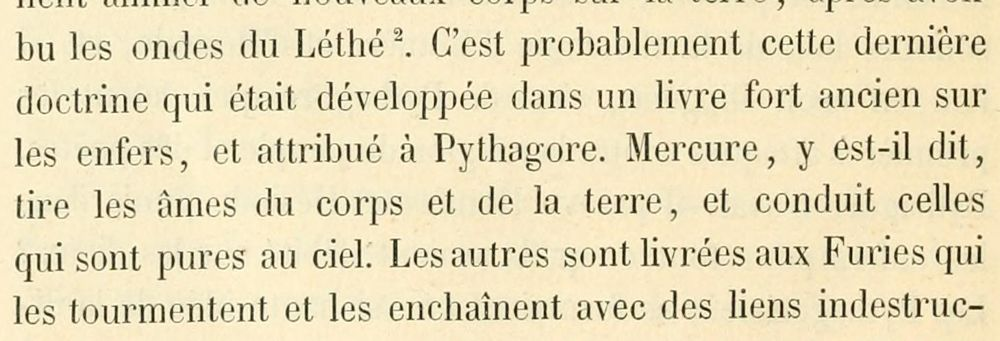
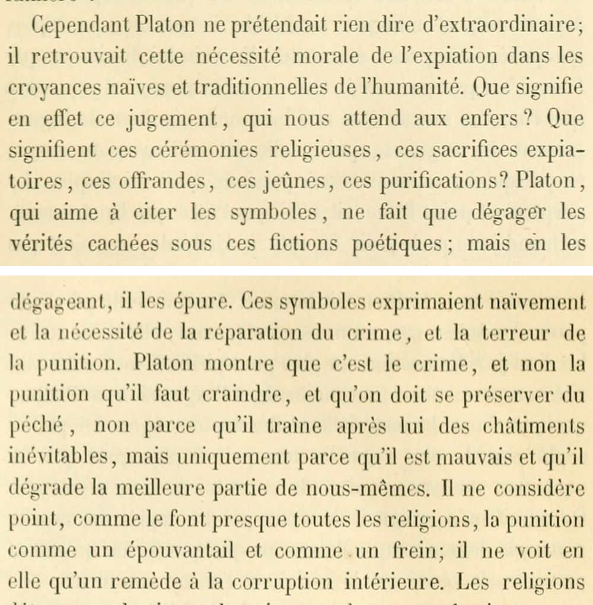

A book on the underworld attributed to Pythagoras (p. 18)
French: tome I, p. 18, scan n29. Highlighted: what Lecky’s text before note 141 reports.

It is probably this last doctrine that was set out in a very old book on the underworld, attributed to Pythagoras. Mercury, it says, draws the souls out of the body and the earth, and leads those that are pure to heaven. The others are handed over to the Furies, who torment them and bind them with unbreakable chains.
Translation: this edition’s draft.
Original French
C’est probablement cette dernière doctrine qui était développée dans un livre fort ancien sur les enfers, et attribué à Pythagore. Mercure, y est-il dit, tire les âmes du corps et de la terre, et conduit celles qui sont pures au ciel. Les autres sont livrées aux Furies qui les tourmentent et les enchaînent avec des liens indestructibles.
“This last doctrine” is, in the sentences just before (read in the OCR), the form of transmigration in which souls are rewarded or punished in another world for a fixed time before returning to new bodies, as in the myth of Er and the sixth book of the Aeneid. The paragraph continues on p. 19.
Plato and the necessity of expiation (pp. 105–106)
French: tome I, pp. 105–106, scan n116–n117; Lecky cites pp. 104–106. Highlighted: the notion of expiation Lecky credits to Plato.

Yet Plato did not claim to be saying anything extraordinary; he found this moral necessity of expiation in the simple, traditional beliefs of mankind. What, after all, is the meaning of the judgment that awaits us in the underworld? What do these religious ceremonies mean, these expiatory sacrifices, offerings, fasts and purifications? Plato, who likes to cite the symbols, only draws out the truths hidden under these poetic fictions; but in drawing them out he purifies them. The symbols expressed, simply, both the necessity of making amends for crime and the terror of punishment. Plato shows that it is the crime, not the punishment, that we must fear, and that we should keep ourselves from sin not because it drags inevitable chastisements after it, but solely because it is evil and degrades the best part of ourselves. He does not regard punishment, as nearly all religions do, as a scarecrow and a curb; he sees in it only a remedy for inner corruption.
Translation: this edition’s draft.
Original French
Cependant Platon ne prétendait rien dire d’extraordinaire; il retrouvait cette nécessité morale de l’expiation dans les croyances naïves et traditionnelles de l’humanité. Que signifie en effet ce jugement, qui nous attend aux enfers? Que signifient ces cérémonies religieuses, ces sacrifices expiatoires, ces offrandes, ces jeûnes, ces purifications? Platon, qui aime à citer les symboles, ne fait que dégager les vérités cachées sous ces fictions poétiques; mais en les dégageant, il les épure. Ces symboles exprimaient naïvement et la nécessité de la réparation du crime, et la terreur de la punition. Platon montre que c’est le crime, et non la punition qu’il faut craindre, et qu’on doit se préserver du péché, non parce qu’il traîne après lui des châtiments inévitables, mais uniquement parce qu’il est mauvais et qu’il dégrade la meilleure partie de nous-mêmes. Il ne considère point, comme le font presque toutes les religions, la punition comme un épouvantail et comme un frein; il ne voit en elle qu’un remède à la corruption intérieure.
Further down the rabbit hole
Sources that Lecky cites in the notes next to the ones that cite this page.
- La Peyrère, Men before AdamWho did Abel guard his sheep against? A 1655 case for people before Adam
- Daillé, De poenis et satisfactionibus humanisWould even the Virgin Mary pass through the fire? A Protestant reads the Fathers on purgatory
- Minucius Felix, OctaviusThe subtle fire that burns and restores
- Swinden, An Enquiry into the Nature and Place of HellAn Anglican clergyman proves that hell is in the sun
- Durand, La vie et les sentimens de Lucilio VaniniWere the pagan oracles the Devil’s work? “If Father Baltus wants to believe in them, he is welcome”
- Laplace, Exposition du système du monde“Deux cent mille milliards à parier contre un”


Backlinks
Every place in Rationalism in Europe that links to this page (generated automatically when the site is built).